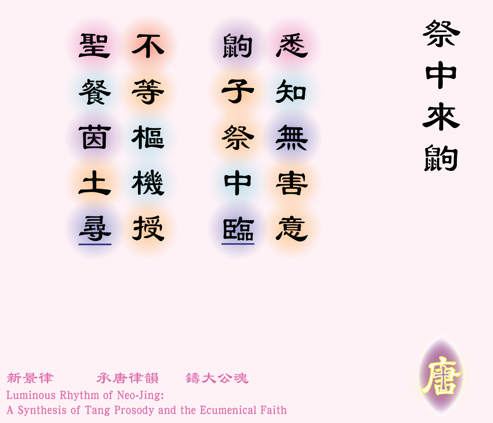

![[如果未顯示圖片，請確認 圖例_2-01.jpg 已放入同資料夾]](圖例_2-01.png)

丙午年八月二十三，牧區假九龍華仁校園草地辦戶外彌撒，旨在倡導受造界之護育[1][1] 當天（主曆2026年10月3日）為教區全人發展委員會舉辦之「活水滌心．萬物共生」戶外彌撒。。樞機主教親蒞主禮，眾皆肅穆。方其宣道祭禮之際，忽有一鼠狀小獸履草而至，體僅如指，毛色微褐。其行徐徐，不驚不怖，徘徊於聖台草茵之間。眾皆莞爾，遂賦此五絕記之。
眾或疑為城中之鼠，然吾思其於草根尋蟲逐蠢，動靜盲定，猜此乃為鼩鼱也。鼩鼱者，與猬同目之獸，翻土食蟲，有益於農。
人有原罪，故需領聖體以結神緣；物本無瑕，則處處皆是天恩之筵。此鼩友不待樞機之授，已於聖台草處自享化育。
悉知無害意，鼩子祭中臨 [2]觀此小獸之行，在草間穿梭，不畏人族，不似家鼠，極可能是稱為「鼩鼱」（粵音渠精）的食蟲動物，與刺猬同目。鼩鼱近乎全盲，只靠聽覺、嗅覺和觸鬚感知，彌撒當時天晴而不暴曬、眾人亦皆安靜無動，故鼩鼱視祭台為安全之地，沒有人會傷害牠。見維基百科．鼩鼱科： https://zh.wikipedia.org/wiki/%E9%BC%A9%E9%BC%B1%E7%A7%91 及香港生物多樣性資訊站：https://bih.gov.hk/tc/species-database/species-information/index.ht。
不等樞機授，聖餐茵土尋。
體裁：五言絕句（平起首句不入韻）
韻部：平水韻．十二侵
創作日期：二零二六年十月四日